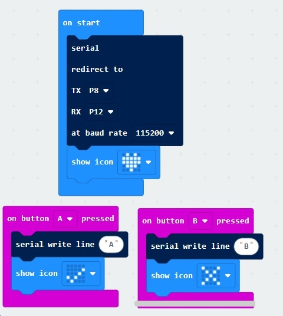
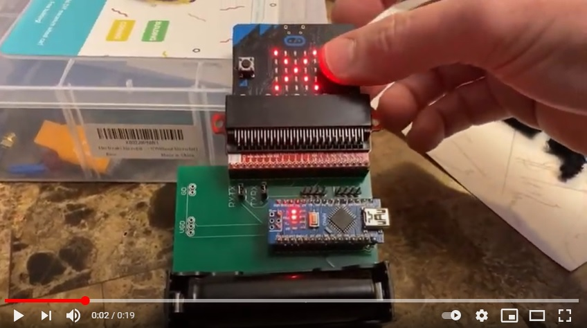

Send communication to an arduino from a micro-bit
To send a command from a micro-bit to an arduino, connect the M8 (tx) pin on the micro-bit to the
D0 (rx) pin on the arduino nano.
Note:
The printed circuit board in the video below has this connection already made.
Micro-bit code
This code will output the character 'A' when the A button is pressed and 'B' when the B button is pressed

Javascript microbit code (Optional)
input.onButtonPressed(Button.A, function () {
serial.writeLine("A")
basic.showIcon(IconNames.Yes)
})
input.onButtonPressed(Button.B, function () {
serial.writeLine("B")
basic.showIcon(IconNames.No)
})
serial.redirect(
SerialPin.P8,
SerialPin.P12,
BaudRate.BaudRate115200
)
basic.showIcon(IconNames.Heart)
basic.forever(function () {
})
Arduino code
This code will respond to a character 'A' by turning off the little led connected to D13.
When a character 'B' is received it will turn on the little led.
unsigned long ledTimeout = 0;
void setup() {
pinMode (13,OUTPUT);
digitalWrite (13,1);
Serial.begin (115200);
}
void loop() {
char ch;
if (Serial.available()) {
ch = Serial.read();
if (ch == 'A') {
digitalWrite (13,0);
} else if (ch == 'B') {
digitalWrite (13,1);
}
}
}
